Tomcat
Tomcat
4. Tomcat服务器配置
4.1.server.xml
- server.xml是tomcat服务器的核心配置文件。包含了Tomcat的servlet容器( Catalina )的所有配置
4.1.1.Server
Server是server.xml的根元素。用于创建一个Server实例，默认使用的实现类是org.apache.catalina.core.Standardserver
1 | <Server port="8005" shutdown="SHUTDOWN"> |
port : Tomcat 监听的关闭服务器的端口。
shutdown:关闭服务器的指令字符串。
Server内嵌的子元素为Listener, GlobaINamingResources，Service
- Listener
1
2
3
4
5
6
7
8
9
10
11
12
13
14# 用于以日志形式输出服务器 操作系统 JVM的版本信息
<Listener className="org.apache.catalina.startup.VersionLoggerListener"/>
# 用于加载(服务器启动)和销毁(服务器停止) APP如果找不到APP库 则会输出日志，并不影响Tomcat启动
<Listener className="org.apache.catalina.core.AprLifecycleListener" SSLEngine="on" />
# 用于避免JRE内存泄漏问题
<Listener className="org.apache.catalina.core.JreMemoryLeakPreventionListener" />
# 用户加载(服务器启动)和销照(服务器停止) 全局命名服务
<Listener className="org.apache.catalina.mbeans.GlobalResourcesLifecycleListener" />
# 用于在Context停止时重建Executor池中的线程，以避免Threedlocal 相关的内存泄漏
<Listener className="org.apache.catalina.core.ThreadLocalLeakPreventionListener" />GlobalNamingResources中定义了全局命名服务
Service：一个server服务器.可以包含多个service服务
4.1.2.Service
- 该元素用于创建
service实例，默认使用org.apache.catalina.core.StandardService.默认情况下 , Tomcat仅指定了Service的名称，值为”Catalina”。 - Service 可以内嵌的元素为: Listener，Executor，Connector，Engine
- Listener用于为Service添加生命周期监听器
- Executor 用于配置Service共享线程池
- Connector用于配置service包含的链接器
- Engine用于配置Service中链接器对应的Servlet容器引擎
1 | <Service name="Catalina"> |
4.1.3.Executor
- 默认情况下, Service并未添加共享线程池配置。如果我们想添加一个线程池，可以在<Service> 添加如下配置
1 | <Executor name="tomcatThreadPool" |
| 属性 | 含义 |
|---|---|
| name | 线程池名称,用于Connector中指定 |
| namePrefix | 所创建的每个线程的名称前缀，一个单独的线程名称为namePrefix+threadNumber |
| maxThreads | 池中最大线程数 |
| minSpareThreads | 活跃线程数/核心池线程数,这些线程不会被销毁会直存在 |
| maxIdleTime | 线程空闲时间,超过该时间后,空闲线程会被销毁,默认值为6000 ( 1分钟) , 单位毫秒。 |
| maxQueueSize | 在被执行前最大线程排队数目，默认为Int的最大值，也就是广义的无限。除非特殊情况,这个值不需要更改 否则会有请求不会被处理的情况发生 |
| prestartminSpareThreads | 启动线程池时是否启动minSpareThreads部分线程。默认值为false ,即不启动 |
| threadPriority | 线程池中线程优先级,默认值为5 ,值从1到10 |
| className | 线程池实现类,未指定情况下,默认实现类为org.apache.catalina.core.StandardThreadexecutor.如果想使用自定义线程池首先需要实现org.apache.catalina.Executor接口 |
- 如果不配置共享线程池，那么catalina各组件在用到线程池时会独立创建
4.1.4 Connector
- Connector用于创建链接器实例。默认情况下, server.xml配置了两个链接器, 一个支持Http协议，一个支持AJP协议。因此大多数情况下,我们并不需要新增链接器配置,只是根据需要对已有链接器进行优化。
1 | <Connector port="8080" protocol="HTTP/1.1" connectionTimeout="20000" redirectPort="8443" /> |
属性说明:
- port: 端口号, Connector用于创建服务端Socket并进行监听，以等待客户端请求链接。 如果该属性设置为0 , Tomcat将会随机选择一个可用的端口号给当前Connector使用
- connectionTimeout: connector 接收链接后的等待超时时间，单位为毫秒。-1 表示不超时。
- redirectPort: 当前connector不支持ssl请求，接收到了一个请求，并且也符合security-constraint约束，需要ssl传输，Catalina自动将请求重定向到指定的端口
- executor :指定共享线程池的名称，也可以通过maxThreads，minSpareThreads 等属性配置内部线程池。
- URIEncoding :用于指定编码URI的字符编码， Tomcat8.x版本默认的编码为UTF-8
- protocol :当前Connector支持的访问协议。默认为HTTP/1.1，并采用自动切换机制选择一个基于JAVA NIO的链接器或者基于本地APR的链接器(根据本地是否含有Tomcat的本地库判定)。
如果不希望采用上述自动切换的机制，而是明确指定协议 ，可以使用以下值
- Http协议
1
2
3org.apache.coyote.http11.Http11NioProtocol 非阻塞式Java NIO链接器
org.apache.coyote.http1l.Http11Nio2Protocol 非阻塞式JAVA NIO2链掖器
org.apache.coyote.httpll.Http11AprProtocol APR链接器- AJP协议
1
2
3org.apache.coyote.ajp.AjpNioProtocol 非阻塞式Java NIO链按器
org.apeche.coyote.ajp.AjpNio2Protocol 非阻塞式JAVA NI02链接器
org.apache.coyote.ajp.AjpAprprotocol APR链接器完整配置
1
2
3
4
5
6
7
8
9
10
11
12
13<Connector port="8080"
protocol="HTTP/1.1"
executor="tomcatThreadPool"
maxThreads="1000"
minSpareThreads="100"
acceptCount="1000"
maxConnections="1000”
connectionTimeout="20000"
compression="on"
compreae1onM1n512e="2048"
disableUplondT imeout="true"
redirectPort="8443"
URIEncoding="UTF-8"/>
4.1.5 Engine
- Engine作为Servlet引擎的顶级元素,内部可以嵌入: Cluster，Listener，Realm, Valve和Host
1 | <Engine name="Catalina" defaultHost="localhost"> |
- 属性说明:
- name: 用于指定Engine的名称，默认为catalina 。该名称会影响一部分Tomcat的存储路径 (如临时文件)
- defaultHost :默认使用的虚拟主机名称，当客户端请求指向的主机无效时，将交由默认的虚拟主机处理， 默认为loalhost。
4.1.6 Host
- Host元素用于配置一个虚拟主机，它支持以下嵌入元素: Alias、Cluster、 Listener、 Valve、 Realm, Context。
- 如果在Engine下配置Realm，那么此配置将在当前Engine 下的所有Host中共享。
- 同样 。如果在Host中配置Realm，则在当前Host 下的所有Context中共享。
- Context中的Realm优先級> Host的Realm优先级> Engine中的Realm优先级。
1 | <Host name="localhost" appBase="webapps" unpackWARs="true" autoDeploy="true"> |
属性说明:
- name:当前Host通用的网络名称，必须与DNS服务器 上的注册信息一致。Engine中包含的Host必须存在一个名称与Engine的defaultHost设置一致
- appBase: 当前Host的应用基础目录，当前Host上部署的web应用均在该目录下(可以是绝对目录,相对路径)。默认为webapps。
- unpackWARs: 设置为true，Host在启动时会将appBase目录下war包解压为目录。设置为false, Host将直接从war文件启动。
- autoDeploy :控制tomcat是否在运行时定期检测并自动部署新增或变更的web应用。
通过给Host添加别名。我们可以实现同-个Host拥有多个网络名称,配置如下:
1
2
3<Host name="www.web1.com" appBase="webapps" unpackWARs="true" autoDeploy="true">
<Alias>www.web1.com</Alias>
<\Host>
4.1.7 Context
- Context用于配置一个Web应用 。默认的配置如下:
1 | <Context docBase="myApp" path="/myApp"> |
- 属性描述:
- docBase : web应用目录或者war包的部署路径。可以是绝对路径,也可以是相对于Host appBase的相对路径。
- path : web应用的Context路径。如果我们Host名为localhost，则该web应用访问的根路径为 : http://localhost:8080/myApp
- 它支持的内嵌元索为: CookieProcessor, Loader, Manager , Realm, Resources , WatchedResource，JarScanner , VaIve
1 | <Host name="www.tomcat.com' appBase="webapps" unpackWARs="true" autoDeploy="true"> |
4.2. tomcat-users.xml
- 该配置文件中。主要配置的是Tomcat的用户，角色等信息。用来控制Tomcat中manager，host-manager的访问权限。
5.Web配置文件
web.xml是web应用的描述文件，它支持的元素及属性来自于Servlet规范定义。- 在Tomcat中，web应用的描述信息包括tomcat/conf/web.xml中默认配置以及Web应用WEB-INF/web. xml下的定制配置
5.1.ServletContext初始化参数
1 | <context-param> |
1 | String value = req.getServletContext().getInitParameter("project_param_01"); |
5.2会话配置
<session-config>用于配置web应用会话,包括超时时间，Cookie配置以及会话追踪模式。它将覆盖server.xml和context.xml中的配置。
1 | <Session-config> |
1 | 1) session-timeout 会话超时时间,单位分钟 |
1 | String session = req.getSession().getId() |
5.3. Servlet配置
- Servlet的配置主要是两部分，servlet 和servlet-mapping
1 | <servlet> |
1 | 1) servlet-name 指定servlet的名称 该属性在web.xml中唯一 |
5.4 Listener配置
Listener用于监听servlet中的事件，例如context，request，session对象的创建、修改、删除，并触发响应事件。
Listener是观察者模式的实现，在Servlet中主要用于对context、request、 session对象的生命周期进行监控。在servlet2.5规范中共定义了8种Listener。
在启动时, servletContextListener的执行顺序与web.xml中的配置顺序一致，停止时执行顺序相反
5.5 Filter配置
- Filter用于配置web应用过滤器，用来过滤资源请求及响应。经常用于认证、日志、加密、数据转换等操作，配置如下:
1 | <filter> |
1 | 1) filter-name 用于指定过滤器名称 在web.xml中，过滤器名称必须唯一 |
5.6欢迎页面配置
welcome- file-list用于指定web应用的欢迎文件列表
- 尝试请求的顺序,从上到下
1
2
3
4
5<welcome-file-list>
<welcome-file>index.html</welcome-file>
<welcome-file>index.htm</welcome-file>
<welcome-file>index.jsp</welcome-file>
</welcome-file-list>
5.7错误页面配置
- error-page用于配置web应用访问异常时定向到的页面,支持HTTP响应码和异常类两种形式。
1 | <error-page> |
6.Tomcat 管理配置
从早期的Tomcat版本开始,就提供了web版的管理控制台,他们是两个独立的web应用,位于webapps目录下
Tomcat 提供的管理应用有用于管理Host的host-manager和用于管理web应用的manager
6.1 host-manager
- Tomcat启动之后,可以通过http://localhost:8080/host-manager/html访问该Web应用。
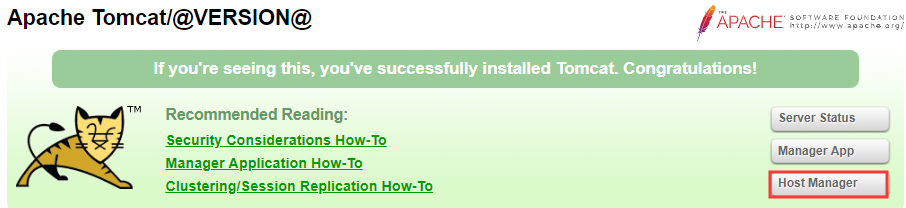
- host-manager 默认添加了访问权限控制，当打开网址时,需要输入用户名和密码( conf/tomcat-users.xml中配置)。所以要想访问该页面,需要在conf/tomcat-users.xml中配置,并分配对应的角色:
- admin-gui :用于控制页面访问权限
- admin-script :用于控制以简单文本的形式进行访问
1 | # conf/tomcat-users.xml |
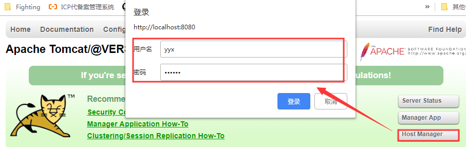
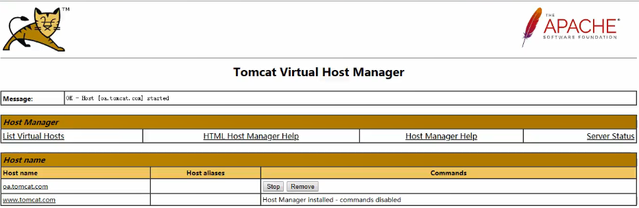
6.2. manager
- manager的访问地址为http://localhost:8080/manager，同样，manager也添加了 页面访问控制,因此我们需要为登录用户分配角色
1 | # conf/tomcat-users.xml |
- 登录查看web应用
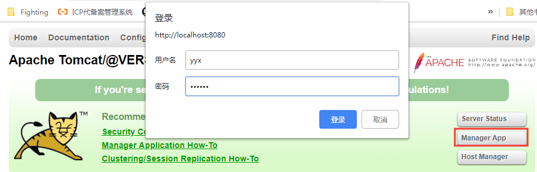
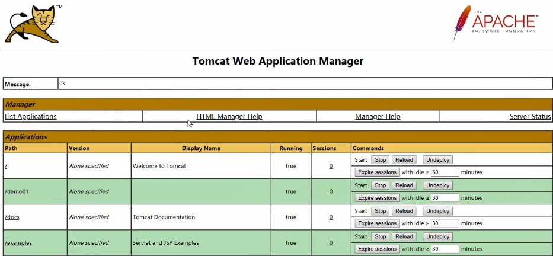
- 查看Server状态
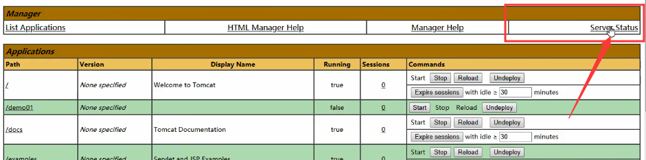
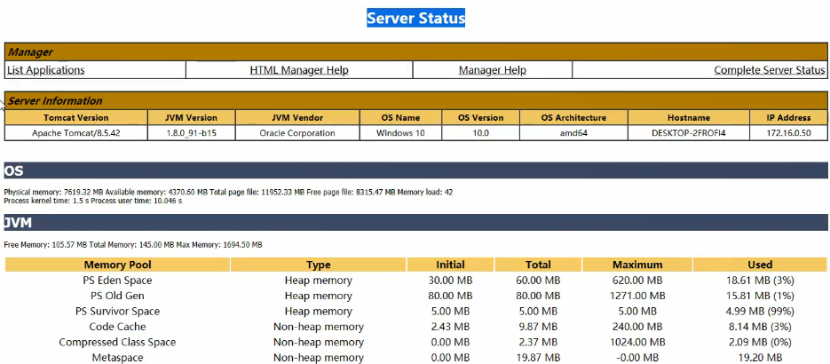
7.JVM配置
- 最常见的JVM配置当属内存分配,因为在绝大多数情况下, JVM默认分配的内存可能不能够满足我们的需求,特别是在生产环境,此时需要手动修改Tomcat启动时的内存参数分配
7.1. JVM内存模型图
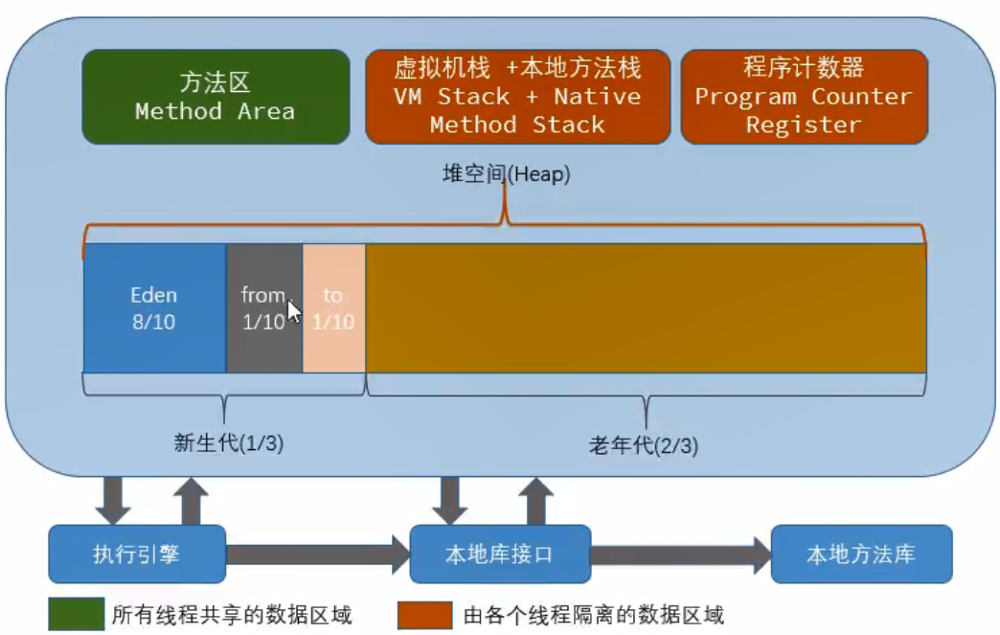
7.2. JVM配置选项
- Windows平台（catalina.bat）
1 | set JAVA_OPTS=-server -Xms2048m -Xmx2048m -XX:MetaspaceSize=256m -XX:MaxMetaspaceSize=256m -XX:SurvivorRatio=8 |
- linux平台（catalina.sh）
1 | JAVA_OPTS="-server -Xms1024m -Xmx2048m -XX:MetaspaceSize=256m -XX:MaxMetaspaceSize=512m -XX:SurvivorRatio=8" |
| 序号 | 参数 | 含义 |
|---|---|---|
| 1 | -Xms | 堆内存的初始大小 |
| 2 | -Xmx | 堆内存的最大大小 |
| 3 | -Xmn | 新生代的内存大小，官方建议是整个堆得3/8。 |
| 4 | -XX:MetaspaceSize | 元空间内存初始大小，在JDK1. 8版本之前配置为-xx:Permsize (永久代) |
| 5 | -XX:MaxMetaspaceSize | 元空间内存最大大小，在JDK1 .8版本之前配置为-Xx:MaxPermsize (永久代} |
| 6 | -XX:NewRatio | 设置新生代和老年代的相对大小比例。这种方式的优点是新生代大小会随着整个堆大小动态扩展。如-XX:NewRatio=3 指定老年代/新生代为3/1。老年代占堆大小的3/4.新生代占1/4。 |
| 7 | -XX:SurvivoRatio | 指定伊甸园区(Eden) 与幸存区大小比例。如-XX:survivorRatio=10 表示伊甸园区(Eden) 是幸存区To大小的10 倍(也是幸存区From 的10倍)。所以，伊甸园区(Eden) 占新生代大小的10/12， 幸存区From和幸存区To每个占新生代的1/12。注意， 两个幸存区永远是一样大的。 |
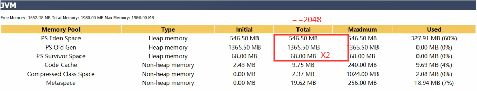
8.Tomcat集群
8.1. 介绍
- 由于单台Tomcat的承载能力是有限的，当我们的业务系统用户量比较大，请求压力比较大时，单台Tomcat是扛不住的,这个时候,就需要搭建Tomcat的集群,而目前比较流程的做法就是通过Nginx来实现tomcat集群的负载均衡。
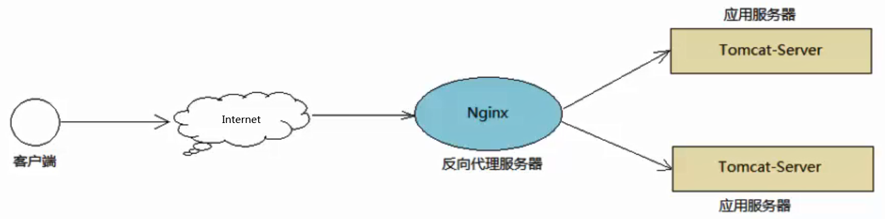
8.2.环境准备
8.2.1. 准备多台Tomcat
在服务器上，安装两台tomcat【复制两个Tomcat目录】，然后分别改Tomcat服务器的端口号
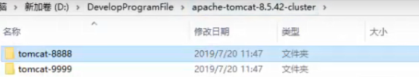
- 关闭命令监听端口
HTTP监听端口
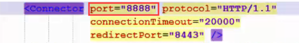
AJP监听端口
1
2
3
4原配置 Tomcat1 Tomcat2
8005 ---------> 8015 ---------> 8025
8080 ---------> 8888 ---------> 9999
8009 ---------> 8019 ---------> 8029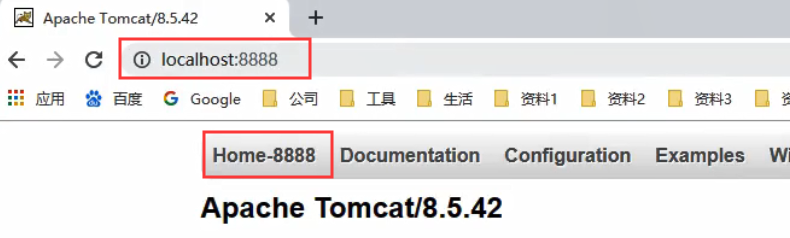
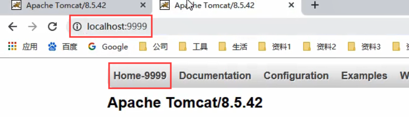
8.2.2. 准备Nginx
在当前服务器上，安装Nginx，然后再配置Nginx,配置nginx.conf
1
2
3
4
5
6
7
8
9
10
11upstream serverpool{
server localhost:8888;
server localhost:9999;
}
server {
listen 99;
server_name localhost;
location / {
proxy_pass http://serverpool/; # 反向代理
}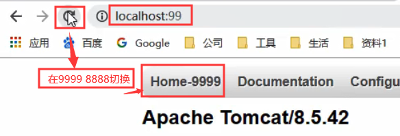
8.3. 负载均衡策略
轮询
- 最基本的配置方法,它是upstream模块默认的负载均衡默认策略。每个请求会按时间顺序逐一分配到不同的后端服务器。
1
2
3
4upstream serverpool{
server localhost:8888;
server localhost:9999;
}描述 fail_timeout 与max_fails结合使用 max_fails 设置在fail_timeout参数设置的时间内最大失败次数,如果在这个时间内,所有针对该服务器的请求都失败了,那么认为该服务器会被认为是停机了 fail_time 服务器会被认为停机的时间长度,默认为10s backup 标记该服务器为备用服务器。当主服务器停止时，请求会被发送到它这里 down weight权重
- 权重方式,在轮询策略的基础上指定轮询的几率
1
2
3
4upstream serverpool{
server localhost:8888 weight=3;
server localhost:9999 weight=2;
}- weight参数用于指定轮训几率, weight的默认值为1 ;
- weight的数值与访问比率成正比
- 此策略比较适合服务器的硬件配置差别比较大的情况
ip_hash
- 指定负载均衡器按照基于客户端IP的分配方式
- 这个方法确保了相同的客户端的请求一直发送到相同的服务器,以保证session会话。
- 这样每个访客都固定访问一个后端服务器,可以解决session不能跨服务器的问题。
1
2
3
4
5upstream serverpool{
ip_hash;
server 192.168.192.133:8080 weight=3;
server 192.168.192.137:8080 weight=2;
}
8.4.Session共享方案
- 在Tomcat集群中,如果应用需要用户进行登录,那么这个时候,用于tomcat做了负载均衡,则用户登录并访问应用系统时,就会出现问题
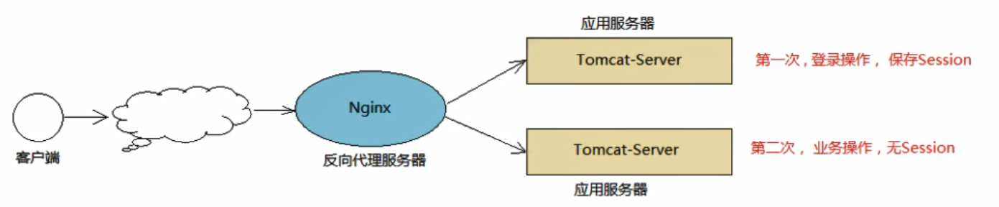
8.4.1 ip_hash 策略
- 一个用户发起的请求,只会请求到tomcatA上进行操作，另一个用户发起的请求只在tomcatB上进行操作。那么这个时候,同一个用户发起的请求。都会通过nginx的ip_ hash策略,将请求转发到其中的一台Tomcat上。
8.4.2. Session复制
- 在sexvlet_demo01工程中，制作seession.jsp页面。分别将工程存放在两台tomcat的webapps/目录下
1 | <%@ page language="java" contentType="text/html; charset=UTF-8" |
配置小规模Session复制负载均衡
配置前
- 第一次访问8888Tomcat
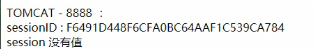
- 第一次访问9999Tomcat——之前访问8888记录未同步——session无值
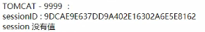
配置
- 在conf/server.xml文件中
1
<Cluster className="org.apache.catalina.ha.top.SimpleTopCluster"/>
- 在工程web.xml中，增加一行
1
<distributable/>
配置后
- 第一次访问8888Tomcat
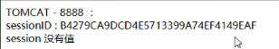
- 第一次访问9999Tomcat——之前访问8888记录同步——session有值
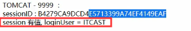
Session复制实现Session共享弊端
- 适用于较小的集群环境(节点数不超过4个)
- 如果集群的节点数比较多的话,通过这种广播的形式来完成session的复制，会消耗大量的网络带宽,影响服务的性能
8.4.3.SSO-单点登录【重点】
- 单点登录(Single Sign On) , 简称为SSO，是目前比较流行的企业业务整合的解决方案之一。
- SSO的定义是在多个应用系统中,用户只需要登录一次就可以访问所有相互信任的应用系统,也是用来解决集群环境session共享的方案之一
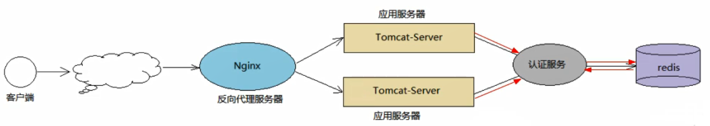
原文作者: 掘金木匠
原文链接: http://goldcarpenter.github.io/2020/01/20/Tomcat_Part2/
版权声明: 转载请注明出处(必须保留作者署名及链接)